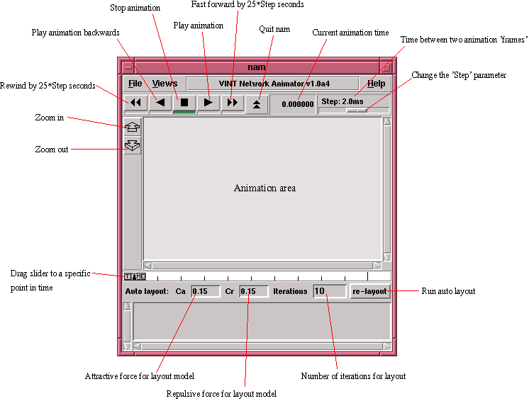

[Previous section] [Next section] [Back to the index]
III.1. Downloading/Installing ns&nam
You can build ns either from the the various packages (Tcl/Tk, otcl,
etc.), or you can download an 'all-in-one' package. I would recommend
that you start with the all-in-one package, especially if you're not
entirely sure which packages are installed on your system, and where
exactly they are installed. The disadvantage of the all-in-one
distribution is the size, since it contains some components that you
don't need anymore after you compiled ns and nam. It's still good
for first tests, and you can always switch to the single-package
distribution later.
Note: The all-in-one package only works on Unix systems.
You can download the package from the ns download page at UCB. If you have any problems with your installation, take a look at the installation problems page on their server. If that also doesn't solve your problem, you might want to ask the ns-users mailing list.
After the installation is complete, you should make sure that your path points to the 'ns-allinone/bin' directory (if you installed the ns-allinone package) where links to the ns and nam executables in the 'ns-2' and 'nam-1' directories can be found or (if you built ns and nam from the pieces) let your path point directly to the directories with the ns and nam executables.
On some systems you will also have to make sure that ns can find the library 'libotcl.so'. If you installed the ns-allinone package, it should be in 'ns-allinone/otcl/'. On Solaris systems you would have to add this path to the 'LD_LIBRARY_PATH' environment variable. For help with other systems, consult the installation problem page, the ns-users mailing list or your local Unix gurus.
A note concerning the ns-allinone version 2.1b3: There is a bug in it which causes some problems on Solaris systems when nam trace generation is turned on. You can either download ns-allinone version 2.1b2 instead or go to the ns web page to download a current snapshot of ns. If you do that, you have to unzip and untar the file in your allinone directory. Then you change into the new directory and run './configure', then 'make'.
You start ns with the command 'ns <tclscript>' (assuming that you are in the directory with the ns executable, or that your path points to that directory), where '<tclscript>' is the name of a Tcl script file which defines the simulation scenario (i.e. the topology and the events). You could also just start ns without any arguments and enter the Tcl commands in the Tcl shell, but that is definitely less comfortable. For information on how to write your own Tcl scripts for ns, see section IV.
Everything else depends on the Tcl script. The script might create some output on stdout, it might write a trace file or it might start nam to visualize the simulation. Or all of the above. These possibilities will all be discussed in later sections.
You can either start nam with the command 'nam <nam-file>' where '<nam-file>' is the name of a nam trace file that was generated by ns, or you can execute it directly out of the Tcl simulation script for the simulation which you want to visualize. The latter possibility will be described in Section IV. For additional parameters to nam, see the nam manual page. Below you can see a screenshot of a nam window where the most important functions are being explained.

[Previous section] [Next section] [Back to the index]
ns-users